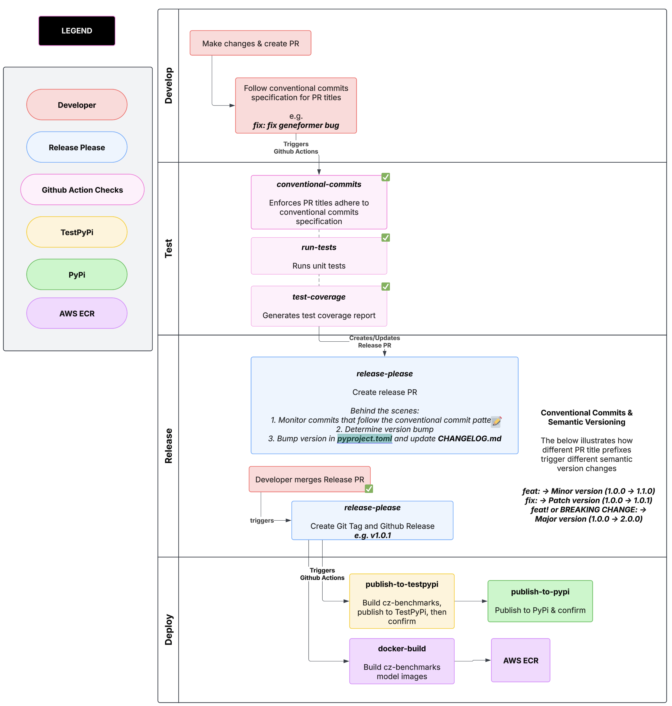

Release Process¶
Diagram of Release Workflow¶

The repository utilizes three primary GitHub workflows to manage the release process:
Conventional Commits Validation: Ensures that all pull request titles adhere to the conventional commits format.Automated Release Management: Uses the release-please action to generate version bumps, update release notes based on commit history, create a Release PR which includes all of the commits to be included in the next release, and create a release upon the merging of the Release PR.Publishing to PyPI: Builds the package and publishes it to TestPyPI (with plans to move to the official PyPI registry) after a new release is published.
Maintainers of cz-benchmarks:
To rollout a new version of cz-benchmarks to PyPi, you must first review the changes included in the release PR, approve it, then merge it.
This will publish the new version of cz-benchmarks to TestPyPi (smoke check) then PyPi.
Conventional Commits Validation¶
File: conventional-commits.yml
Validates that pull request titles follow the conventional commits format.
Ensures that commit messages indicate the type of change (major, minor, patch), which is essential for automated version bumping using Semantic Versioning.
This helps dictate what commits get inserted in the CHANGELOG.md
How prefixes of PR titles affect the semantic version¶
Commits that start with
feat:trigger a minor version bump.Commits that start with
fix:trigger a patch version bump.Commits indicating a breaking change (e.g., through
BREAKING CHANGE:or an exclamation mark likefeat!:) trigger a major version bump.
Examples¶
Commit Message |
Version Bump |
|---|---|
|
|
|
|
|
|
|
|
|
None |
|
None |
|
None |
Automated Release Management¶
File: release-please.yml
The workflow uses the release-please action configured for Python projects. It analyzes commit messages (validated by the conventional commits check) and determines the new version. Actions taken care of by release-please.yml:
Logs updates in
CHANGELOG.mdCreates a release PR with the changes to be included in the new version
Upon merging the release PR (example), it will automatically push a new tag and create a release
Publishing to PyPi¶
File: publish-pypi.yml
Builds and push the new version of cz-benchmarks to TestPyPi and verifies it works. Once the repo goes public, we will release to the real PyPi index
After release-please.yml finishes publishing a new release, this workflow will be triggered. This action will:
Build
cz-benchmarksdistributable filesPublish to TestPyPi with
pypa/gh-action-pypi-publish@release/v1Confirm the version was published by checking with few seconds
pip index versions --index-url https://test.pypi.org/simple/ cz-benchmarks | grep "Available.*${{ steps.get_version.outputs.VERSION }}"Install and smoke test the new package
Publishing Documentation¶
File: docs-publish.yml
After release-please.yml finishes publishing a new release, this workflow will be triggered to build and publish the documentation. This action will:
Set up Python 3.11 environment with pip caching
Install Sphinx and the ReadTheDocs theme
Build the Sphinx documentation using
make clean htmlUpload the built documentation as a GitHub Pages artifact
Deploy the documentation to GitHub Pages using the official GitHub Pages deployment action
The documentation will be available at the repository’s GitHub Pages URL
The documentation is automatically updated whenever a new release is published, ensuring that the online documentation always matches the latest released version. The workflow can also be triggered manually through the GitHub Actions interface for testing purposes.
Building Model Images¶
After release-please.yml finishes publishing a new release, this workflow will also be triggered (like publish-pypy.yml).
This action will:
Build images of the models and push them to a private ECR repo that is publicly readable.